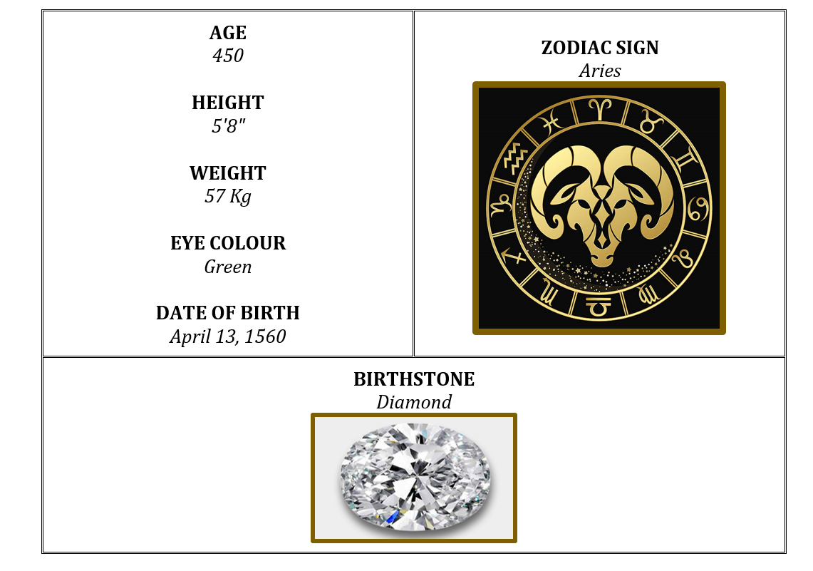
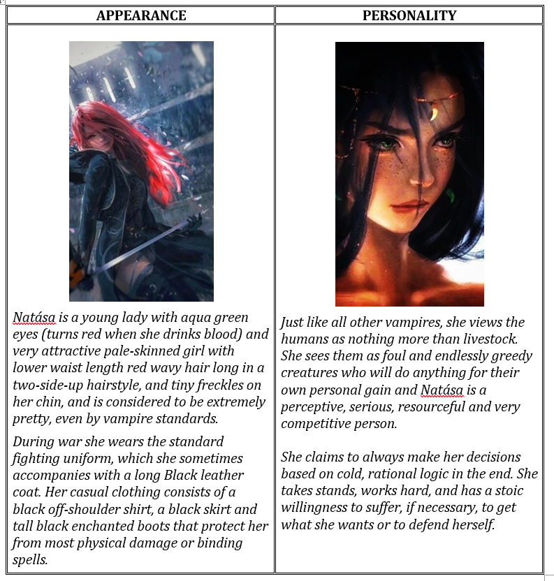
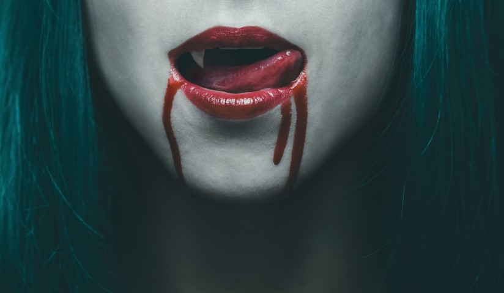

Natása Iezabel Bloodgood
Author: Dibyarup Nath
Category: Vampire
Original Character

POWERS AND ABILITIES
• Superhuman Physical Characteristics,
• Enhanced Senses,
• Hypnotism and Memory Manipulation,
• Sleep Inducement,
• Regeneration (Slow), feeding on Human blood allows for accelerated Regeneration.
The vampire is one of the most powerful and feared of all the undead. While they are typically incredibly fast, gifted mages, and unnaturally strong, fear of vampires is abnormally great due to their ability to infect others, a fate often described as worse than death.
Vampires spread by giving mortals diseases such as Porphyric Hemophilia, Sanguinare Vampiris, and Noxiphilic Sanguivoria. Vampires tend to be organized into many different clans called covens; in fact, there are over a hundred distinct kinds of vampire in Europe alone.
Whether they consider themselves cursed or blessed, or whether they have given into their animalistic instincts or have sought to rid the world of the disease, vampires are nonetheless considered abominations.

WEAKNESSES
Stake: An iron stake can knock a hole in the vampire and weaken it to some point while a normal wooden stake can kill a vampire when dug into the heart and a silver
Fire: Fire causes vampires a great deal of pain and injury; they can, however, quickly heal from even the worst burns if given time and blood.
Werewolf Bite: A bite from a werewolf as the venom in the saliva will neutralize the vampire venom in their blood causing them to die and dieteriote.
Magic: Vampires are vulnerable to the effects of magic. Witches are able to give supernatural aneurysms that cause the blood vessels of vampires to explode
Decapitation: A vampire can be killed completely if its head is cut out and body burned.
